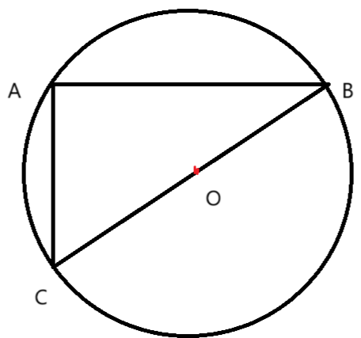

Q1. যদি $9^x=27^y$ হয়, তাহলে $x$ এবং $y$ এর মধ্যে সম্পর্ক খুঁজে বের করুন:
Q2. $\frac{1.605}{2.4} \times \frac{9.6}{32.1}=?$
Q3. একটি ৪ একক বাহুবিশিষ্ট বর্গক্ষেত্রের ভিতরে সর্বাধিক ব্যাস কত এককের বৃত্ত বসানো যেতে পারে?
Q4. যদি ১৫/০৯/২০০০ ছিল শুক্রবার, তাহলে ১৫/০৯/২০২৩ ছিল:
Q5. যদি ১০ জন ১০০ দিনে ১০০ কাজ করতে পারে, তাহলে ১০০ জন কত দিনে ১০ কাজ করতে পারবে?
Q6.

$BOC$ বৃত্তের ব্যাস, যদি $AC=3cm.$ এবং $BC=4cm.$ হয়, তাহলে $AB$ এর দৈর্ঘ্য কত হবে?
Q7. একটি আয়তাকার ক্ষেত্রের দৈর্ঘ্য ও প্রস্থের গ.সা.গু ৬০ মিটার এবং ল.সা.গু ৪ মিটার, এবং প্রস্থ হল
দৈর্ঘ্যের $\frac{3}{5}$ অংশ, তাহলে ক্ষেত্রের প্রস্থ খুঁজে বের করুন:
Q8. একটি বৃত্তের কেন্দ্র $O$ এবং $AB$ একটি জ্যা। $AB$ এর $O$ থেকে দূরত্ব $৪cm$ এবং বৃত্তের ব্যাসার্ধ
$১০cm$। তাহলে জ্যাটির দৈর্ঘ্য নির্ণয় করুন:
Q9. যদি $\times$ এর মান $+$ এবং $<$ এর মান $-$, $+$ এর মান $\div$, $>$ এর মান $\times$, $-$ এর মান
$=$
এবং $\div$ এর মান $>$ এবং $=$ এর মান $<$ হয়, তাহলে নিম্নলিখিত কোনটি সঠিক?
Q10. দুটি সংখ্যা $16$ এবং $25$ এর মধ্য সমানুপাতি কত?
Q11. একটি দোকানে একটি পণ্যের দাম $২০\%$ হ্রাস করা হয়েছে। হ্রাসের পর পণ্যের দাম $৮০০$ টাকা
হয়েছে। তাহলে, পণ্যের মূল দাম কত ছিল?
Q12. নিচের সংখ্যার শ্রেণীতে পরবর্তী সংখ্যা কী হবে?
$2, 6, 12, 20, 30, \, ?$?
Q14.একটি কাঁচের কাপে মিষ্টির সিরাপ এবং পানি $৫:৩$ অনুপাতে মিশ্রিত রয়েছে। সিরাপের পরিমাণ
$১.৫$ লিটার বৃদ্ধি করার পর নতুন অনুপাত হয়ে দাঁড়ায় $৭:৫$। সিরাপের প্রাথমিক পরিমাণ কত লিটার
ছিল?
Q15.একটি পরিমাণ টাকা $২$ বছরের জন্য $১২\%$ বার্ষিক চক্রবৃদ্ধি সুদে বিনিয়োগ করা হয়েছে। $২$
বছরের শেষে, মোট পরিমাণ $৩৭৮৪.৪০$ টাকা হয়েছে। তাহলে, প্রাথমিক মূলধন কত ছিল?